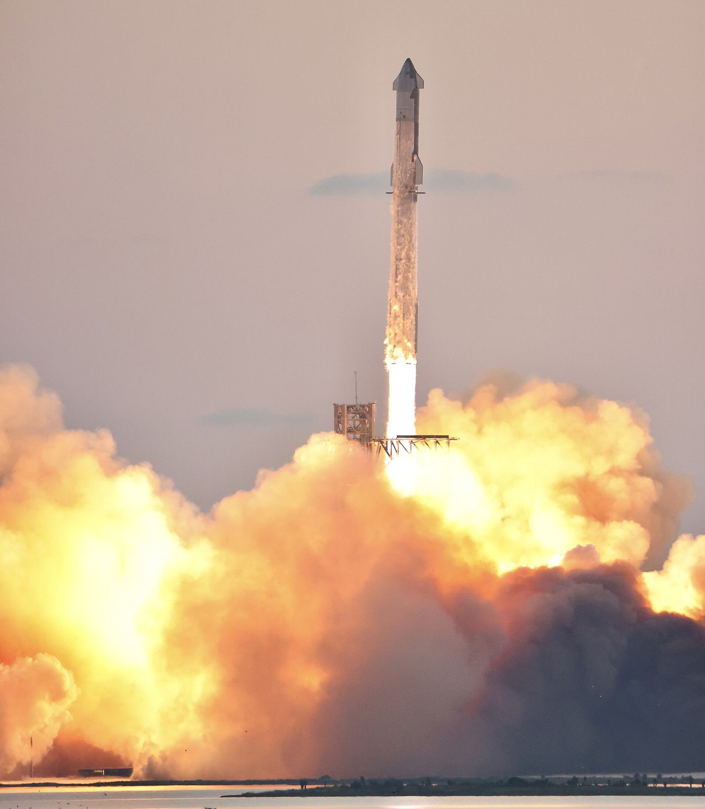
The story of the biggest rocket ever built
StarshipFrom a steel “water tower” to orbit, and the Moon and Mars beyond
On Sept. 28, 2026, a 124-metre stainless-steel rocket reached orbit for the first time and released 26 next-generation Starlink satellites.
How did SpaceX get here in about seven years? What does it take to fly a rocket again and again, which businesses are waiting for it, and what comes next?
Use → / ← or Space, click the arrows, or swipe. F = fullscreen · N = notes · P = presenter view
Why Starship matters
Throw-away rockets → airliner-style rockets
- Full reuse: both stages are designed to come back. The booster is caught by the launch tower, and the ship is meant to be caught too [1][12].
- Rapid reuse: the goal is to refly without refurbishment. SpaceX's filing even talks about reflights in under an hour [1][12].
- Huge capacity: Starship V3 is designed to carry 100+ metric tons to orbit while fully reusable, and future versions aim for about 200 t [1][12].
- Cheaper space: SpaceX says Starship aims to cut the cost of reaching orbit by 99% or more compared with the historical average [12].
Launch cost per kilogram to orbit (US$)
Figures from SpaceX's 2026 SEC filing, which cites NASA [12]. The Starship bar is our own math: 1% of $18,500. It is a target, not a price.
The vehicle explained
Two stages, 39 engines, one giant steel rocket
Roughly a 40-storey building; 9 m wide [1].
33 on the booster and 6 on the ship [1][12].
3,650 t booster + 1,600 t ship of liquid methane and liquid oxygen [1].
The design goal for V3 [1][12].
Official specs from SpaceX's Starship page [1] and SEC filing [12]. Drawn roughly to scale and simplified for teaching.
Inside the engineering
Methalox, full-flow & stainless steel
- Raptor burns liquid methane + liquid oxygen (“methalox”) in a full-flow staged combustion cycle: all the fuel and all the oxygen pass through turbines before reaching the combustion chamber. That is very efficient but very hard to build [12][27].
- Why methane? It burns clean (little soot “coking”), and it can be made on Mars from CO₂ and water ice with the Sabatier reaction [27].
- Raptor 3 (V3) removes heat shields and simplifies plumbing. SpaceX says that saves nearly a ton per engine [12].
- Stainless steel instead of carbon fiber: cheap, strong when super-cold, and tough in heat. It started as 301 steel, then 304L, then SpaceX's own 30X alloy [27].
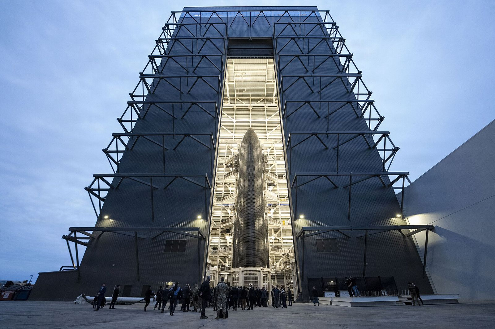
Technical explainer · video
How Raptor works
Everyday Astronaut (Tim Dodd) explains engine cycles, full-flow staged combustion, and why Raptor was such a leap.
- Try it in class: play the first chapters on engine cycles, then pause.
- Ask: what is the advantage of burning all the propellant in the main chamber?
The video is from 2019, so its Raptor numbers are older than V3. Use the slide-3 specs for today's figures.
Four big ideas
The tricks that make Starship different
Hot staging
The ship lights its engines while still attached, pushing off a vented ring on top of the booster. First done on Flight 2, Nov. 18, 2023 [25].
Heat-shield tiles
Hexagonal ceramic tiles protect the ship's windward side through re-entry, similar in idea to the Space Shuttle's. V3 uses an improved tile design [27].
Mechazilla catch
No landing legs: the tower's “chopsticks” arms catch the returning booster mid-air, ready to be inspected and reflown [12].
Orbital refilling
Tanker Starships refill a ship in orbit so it can reach the Moon or Mars. SpaceX's 2024 estimate: about 10 tanker launches per lunar landing, “with error bars” [1][30].
Oct. 13, 2024 · Flight 5
The day a tower caught a rocket
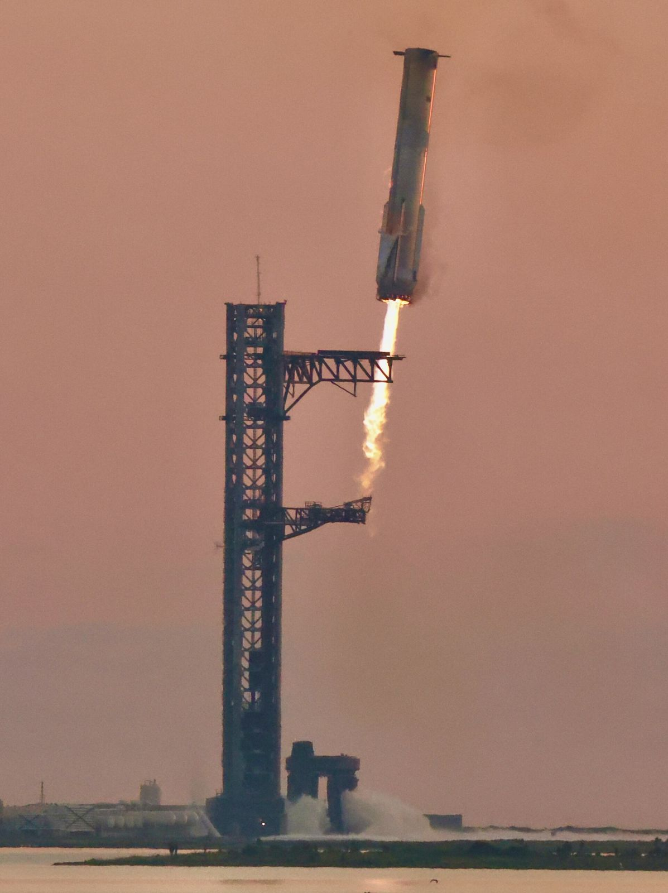
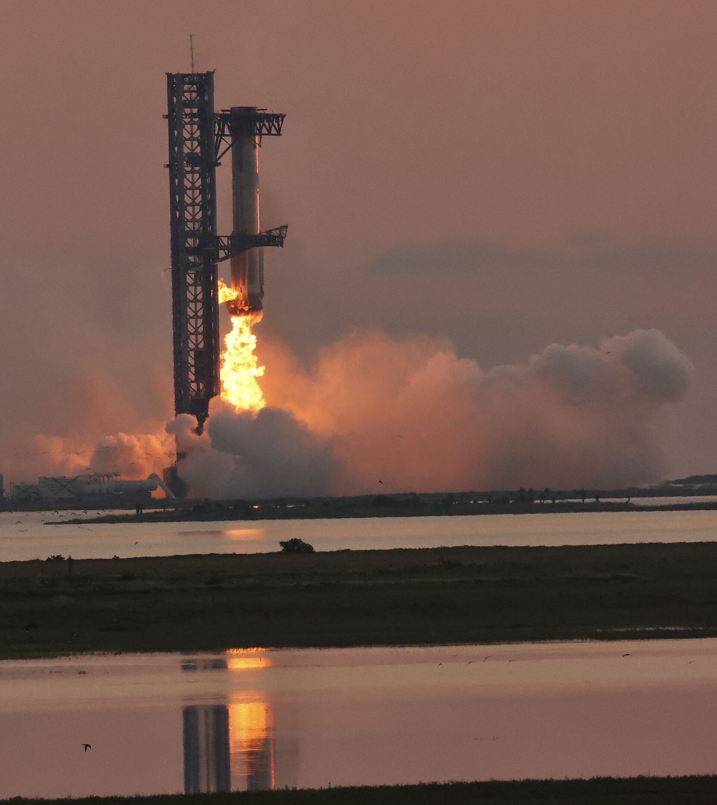
Flight 5 was the first booster catch. Boosters were caught again on Flights 7 and 8 (2025), and Flight 9 flew the first reused booster [25].
Development timeline · part 1
Hop, flop and land: the prototypes (2019–2021)
Starhopper makes two hops, the second (Aug. 27) to about 150 m [26].
SN8 climbs to about 12.5 km, does a “belly-flop”, then crashes on landing because of low fuel-tank pressure [26][27].
SN9, SN10, SN11 are all lost on or near landing. Each failure teaches something [27].
SN15 flies to about 10 km and makes the first soft landing [26].
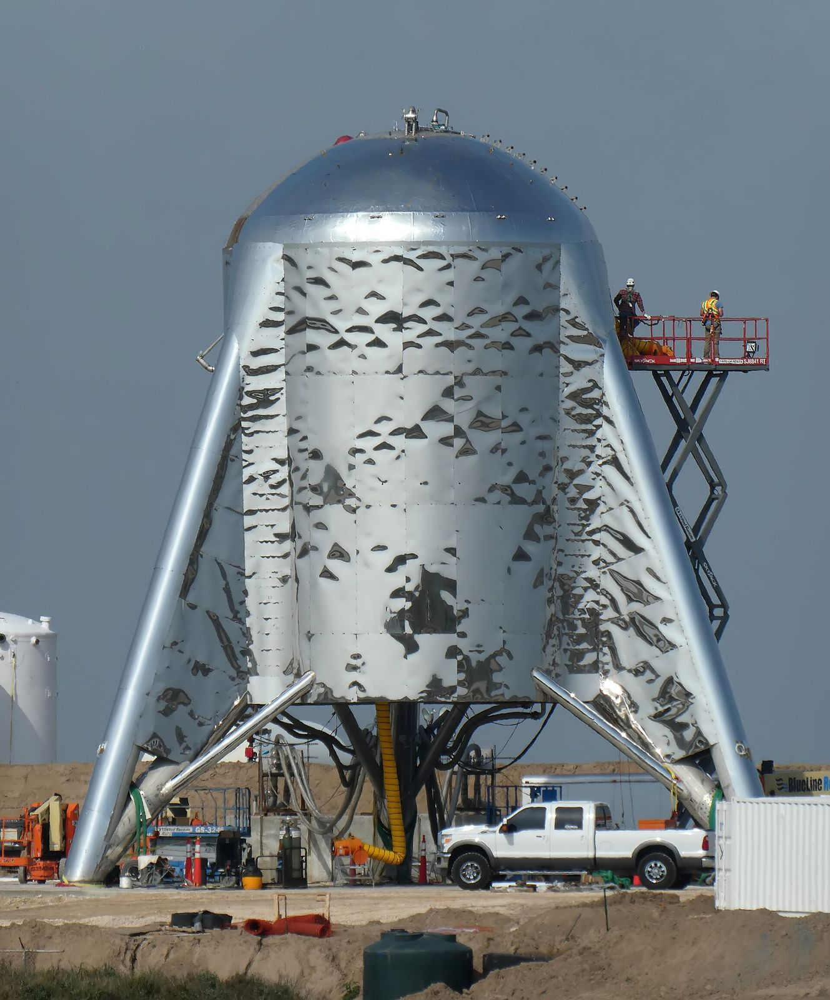
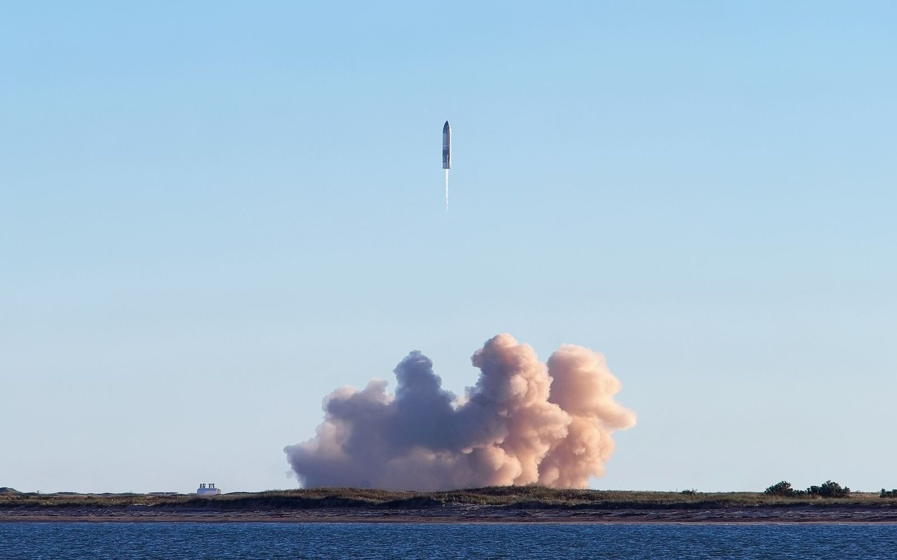
Development timeline · part 2
14 full-stack flights (Apr 2023 – Sep 2026)
success success, booster lost failure milestone · V1/V2/V3 = vehicle version. Outcomes follow the launch-outcome column of [25], checked against SpaceX [2][3][4].
Flights 5, 7 and 8 [25].
Catching the ship is still a goal SpaceX lists as a key milestone [12].
Lost on a ground test stand before Flight 10 [27].
The Flight 13 ship survived splashdown and returned to Texas in Oct. 2026 after 75 days at sea [7].
2026 · Version 3 · Starbase
Flight 14: Starship reaches orbit
- Sep. 28, 2026, 7:48 a.m. CT from Pad 2 at Starbase, Texas: Ship 41 on Booster 21 [2][25].
- Ship 41 lost one engine on the way up but still reached orbit (about 262 × 275 km) and deployed all 26 Starlink V3 satellites. All 26 made contact [2][11][25].
- Out of caution, SpaceX made its first deorbit burn early and splashed down on target north of Hawaii about 3 hours after launch, instead of after the planned ~10 hours [2][5].
- The booster made a controlled splashdown in the Gulf. [2][11].
- Next: Flight 15 (Ship 42, Booster 22) is listed as no earlier than Nov. 8 in planning documents. Flight 16 is slated to be the first from LC-39A in Florida [7][29].
Starbase became an official Texas city by vote on May 3, 2025 [28]. Pad 2 debuted on Flight 12 [4].
Timelines ahead · status on Oct. 10, 2026
What's officially planned, and what has slipped
| Milestone | What the sources say | Status |
|---|---|---|
| Starlink V3 deployment | Began on Flight 14 (26 sats). Up to 60 per launch planned; Musk hopes for about 1,000 V3s by roughly Q2 2027 [2][12][20] | Under way |
| Ship catch by the tower | Listed by SpaceX as a key upcoming milestone; not yet attempted [12] | Goal · no date |
| Ship-to-ship propellant transfer demo | Planned for Mar. 2025, then Mar. 2026 (NASA OIG); still not scheduled as of Sep. 2026 [16][31] | Slipped |
| Starlink V2 Mobile (direct-to-cell) | Satellites to start flying on Starship in 2027, with service by the end of 2027 (Shotwell) [12][20] | Target 2027 |
| Uncrewed Starship lunar landing | Musk: targeting Mar. 2027 after shifting priority to the Moon (Feb. 2026) [18] | Company aim |
| Artemis III (NASA) | Crewed Orion docks with lander test articles in Earth orbit, 2027. NASA chief: about 90 days behind (Sep. 2026) [14][15][17] | Target 2027 |
| Artemis IV: first crewed landing | Starship HLS lands astronauts near the lunar south pole, early 2028. The first landing was once planned for Artemis III [13][14][30] | Target 2028 (moved) |
| Moon & Mars cargo / Mars crews | Uncrewed Mars flights for the late-2026 window were put on hold. Paid cargo to the Moon and Mars from 2028 at the earliest. No official date for crewed Mars [1][18] | 2026 dropped · NET 2028 |
Under way happening now · Target official SpaceX or NASA date · Company aim stated by SpaceX leadership · Slipped an earlier date was missed or moved
Lunar logistics · NASA Artemis
Starship HLS: the Moon lander
- In 2021, NASA picked a crewed version of Starship as its Human Landing System. The first contract was $2.9 billion [30].
- Plan: tankers fill a depot ship in Earth orbit → HLS refills → flies to lunar orbit → astronauts move over from Orion and land [31].
- NASA's Artemis III (2027) will test the docking with Orion in Earth orbit before Artemis IV tries to land in 2028 [15].
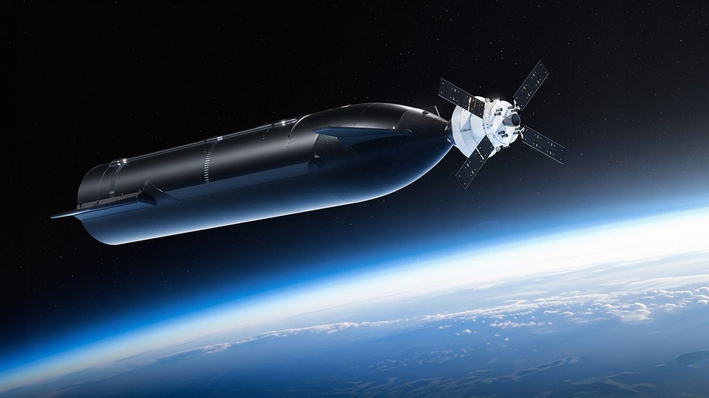
Business #1 · the money engine
Starlink V3 and phones that talk to space
About 10× a V2 Mini (96 Gbps). Too big for Falcon 9, so V3 needs Starship [12][20].
SpaceX says about 20× the downlink added per Falcon 9 launch [12].
In 164 countries and territories, as of Mar. 31, 2026 [12].
5G-class phone service from space, using spectrum bought from EchoStar [12][20].
SpaceX's largest segment by far [12].
$870B broadband + $740B mobile. This is the company's own claim, not an independent figure [12].
Sources: SpaceX S-1 filed with the SEC, May 2026 [12]; ISPreview report on the Aug. 4, 2026 investor call [20].
Businesses built on Starship · part 1
Moon cargo, stations and super-fast travel
Lunar logistics
NASA HLS contract; SpaceX lists paid Moon cargo from 2028 at the earliest, at $100M per metric ton [1][30].
ContractedSpace stations
Voyager's Starlab is designed to launch fully outfitted on a single Starship before the ISS retires [23].
ContractedPoint-to-point travel
“Anywhere in the world in one hour or less”: a long-term idea in SpaceX's plans. No date or price yet [1][12].
VisionRocket Cargo (USAF/USSF)
AFRL's 5-year, $102M study contract (2022). The program is being phased down as the focus shifts to smaller re-entry pods [21][22].
Scaled back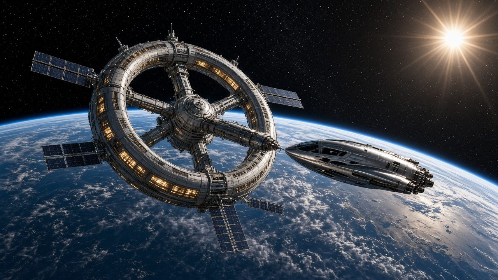
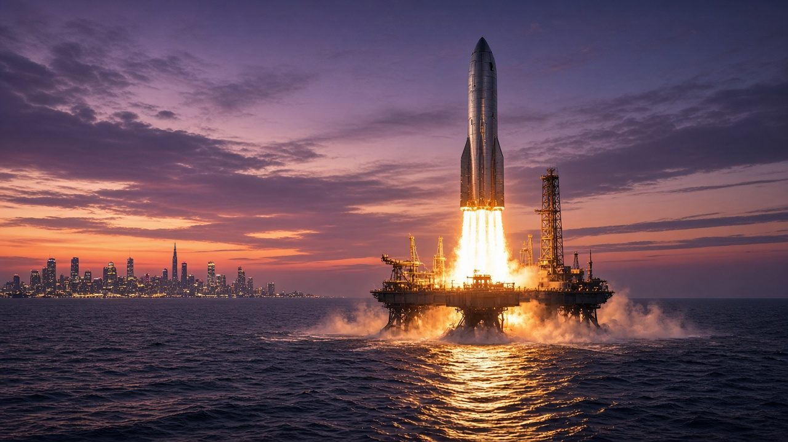
Businesses built on Starship · part 2
Data centers in orbit, tourists and Mars
Orbital data centers
Solar-powered AI compute satellites, “as early as 2028” per SpaceX. It also warns they may not be commercially viable [12][19].
Early conceptIn-space manufacturing
SpaceX lists it as a future market. Its own filing says the industry “does not exist today” [12].
FutureSpace tourism
dearMoon, the private Starship trip around the Moon, was cancelled on June 1, 2024 over schedule uncertainty [24].
dearMoon cancelledMars settlement
The original reason for Starship. Paid Mars cargo from 2028 at the earliest; the Moon comes first for now [1][18].
Long-termSpace-enabled solutions, on top of $1.6T for connectivity. This is an issuer claim in an IPO filing, not an independent estimate, and the filing warns such estimates “may prove to be inaccurate” [12].
In-orbit manufacturing, passenger flights to Mars, and asteroid mining are listed as industries that do not exist yet [12].
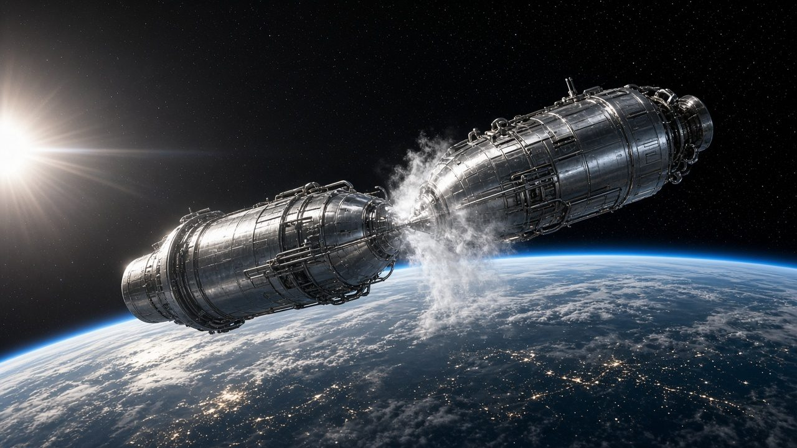
The key that unlocks everything
Filling up in orbit
- Two ships launch about 3–4 weeks apart. A tanker docks with a target ship, and a pressure difference pushes propellant across, with no pumps needed [30].
- The hard parts: keeping super-cold liquids from boiling off, and settling the fluid in zero-g with small thrusters [12][30].
- V3 ships carry refueling hardware such as docking ports [27].
- Without refilling, there is no Moon landing and no Mars trip. With it, a ship can carry “hundreds of tonnes of cargo” to Mars [1].
The future vision
A Moon base, then a city on Mars
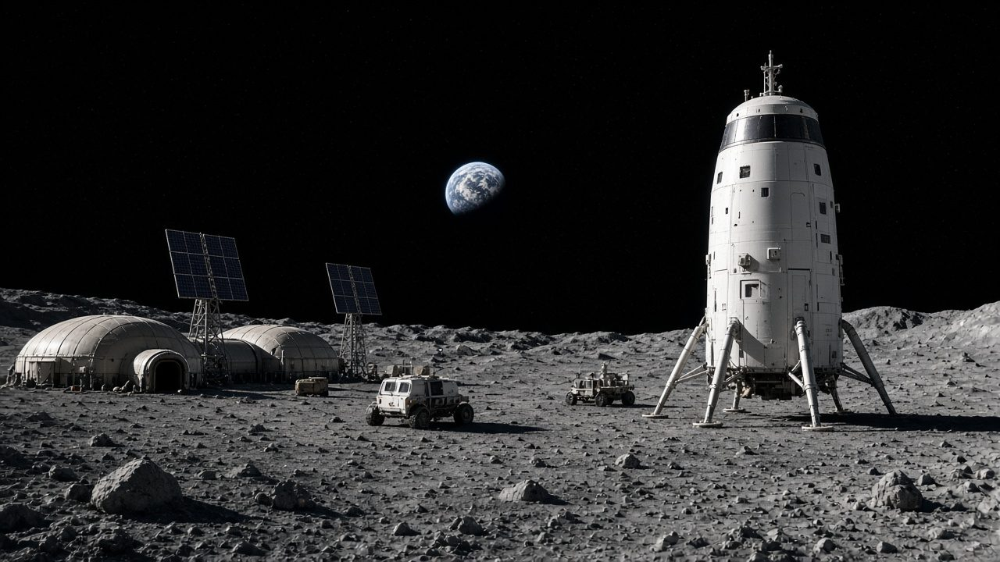
Moon first
In Feb. 2026, Musk said a “self-growing city” on the Moon could come sooner than one on Mars [18].
Starfactory
Sized to build up to 1,000 Starships a year for Mars transfer windows [1].
Up to 100 people
Per ship on long interplanetary flights, in SpaceX's design goal [1].
Make fuel there
Methane plus oxygen can be made on Mars (Sabatier), so ships can refuel for the trip home [27].
Inspiring vision · animation
“Making Life Multi-Planetary”
A short official SpaceX film about its biggest goal: making humanity a multi-planet species.
A vision film. Any animated scenes show plans, not real events.
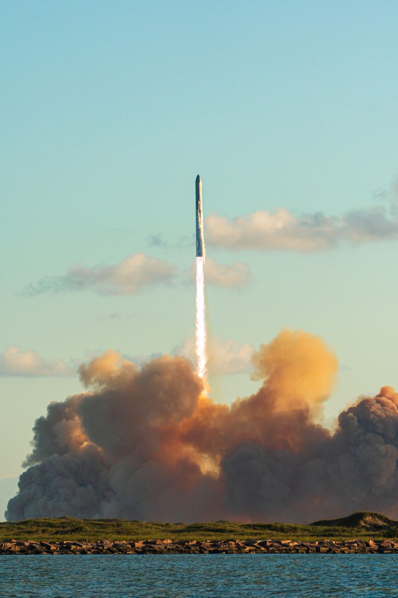
From 150 metres to orbit in seven years
“…to make life multiplanetary, to understand the true nature of the universe, and to extend the light of consciousness to the stars.”SpaceX mission statement, from its 2026 SEC filing [12]
💭 Think
Which failure in this story taught the most?
🛠️ Build
Design one thing you would send to a Moon base on the first cargo Starship.
🚀 Dream
If launch got 100× cheaper, what new job would exist in 2040?
Sources & credits · facts checked Oct. 10, 2026
Sources
- SpaceX: Starship vehicle page (specs, Moon/Mars cargo, Starfactory). https://www.spacex.com/vehicles/starship
- SpaceX: Starship Flight 14. https://www.spacex.com/launches/starship-flight-14
- SpaceX: Starship's Thirteenth Flight Test. https://www.spacex.com/launches/starship-flight-13
- SpaceX: Starship's Twelfth Flight Test. https://www.spacex.com/launches/starship-flight-12
- Ars Technica, Sep 28 2026: Starship goes orbital, deploying first next-gen Starlinks. https://arstechnica.com/space/2026/09/starships-first-orbital-launch-gives-lift-to-spacexs-next-gen-starlinks/
- SpaceNews, Oct 2 2026: SpaceX, analysts satisfied with latest Starship flight. https://spacenews.com/spacex-analysts-satisfied-with-latest-starship-flight/
- NASASpaceflight, Oct 9 2026: Ship 40 returns home as Ship 42 gets more cryo testing. https://www.nasaspaceflight.com/2026/10/ship-40-returns-ship-42-more-testing/
- NASASpaceflight, Jul 2026: Starship Flight 13 achieves new firsts. https://www.nasaspaceflight.com/2026/07/starship-flight-13-flight/
- NASASpaceflight, May 2026: Following Starship V3 debut, SpaceX prepares for follow up. https://www.nasaspaceflight.com/2026/05/starship-flight-12-v3-follow/
- Spaceflight Now, May 27 2026: FAA requires SpaceX-led mishap investigation. https://spaceflightnow.com/2026/05/27/faa-requires-spacex-led-mishap-investigation-before-resumption-of-starship-launches/
- Payload, Sep 28 2026: Starship reaches orbit on 14th test flight. https://payloadspace.com/starship-reaches-orbit-on-14th-test-flight/
- SpaceX Form S-1, SEC, May 2026 (cost per kg, V3, Starlink, markets, risks). https://www.sec.gov/Archives/edgar/data/1181412/000162828026036936/spaceexplorationtechnologi.htm
- NASA: Artemis program page. https://www.nasa.gov/humans-in-space/artemis/
- NASA, Feb 2026: NASA adds mission to Artemis, updates architecture. https://www.nasa.gov/news-release/nasa-adds-mission-to-artemis-lunar-program-updates-architecture/
- NASA: NASA marches toward Artemis III in 2027, names crew. https://www.nasa.gov/news-release/nasa-marches-toward-artemis-iii-mission-in-2027-names-crew-members/
- NASA OIG, Mar 10 2026: Management of the HLS contracts (IG-26-004). https://oig.nasa.gov/audits/nasas-management-of-the-human-landing-system-contracts/
- Talk of Titusville, Sep 25 2026: Isaacman memo, Artemis III ~90 days behind. https://talkoftitusville.com/2026/09/25/jared-isaacman-artemis-iii-is-around-90-days-behind-schedule/
- Reuters, Feb 8 2026: SpaceX prioritizes lunar 'self-growing city' over Mars. https://www.reuters.com/science/musk-says-spacex-prioritise-building-self-growing-city-moon-2026-02-08/
- Reuters, Apr 21 2026: SpaceX says AI space data centers may not be commercially viable. https://www.reuters.com/world/spacex-says-unproven-ai-space-data-centers-may-not-be-commercially-viable-filing-2026-04-21/
- ISPreview, Aug 5 2026: SpaceX updates on Starlink V3 and V2 Mobile plans. https://www.ispreview.co.uk/index.php/2026/08/spacex-updates-on-starlinks-v3-broadband-and-v2-mobile-satellite-plans.html
- SpaceNews, Jan 2022: SpaceX wins $102M Air Force Rocket Cargo contract. https://spacenews.com/spacex-wins-102-million-air-force-contract-to-demonstrate-technologies-for-point-to-point-space-transportation/
- Breaking Defense, Sep 23 2026: Air, Space Forces pick up pace for orbital cargo delivery. https://breakingdefense.com/2026/09/air-space-forces-pick-up-research-pace-for-orbital-cargo-delivery/
- Voyager: Starlab space station. https://voyagertechnologies.com/starlab/
- Reuters, Jun 1 2024: Maezawa cancels dearMoon flyby. https://www.reuters.com/technology/space/japanese-billionaire-maezawa-dearmoon-mission-cancels-moon-flyby-2024-06-01/
- Wikipedia: List of Starship launches (flight dates and outcomes). https://en.wikipedia.org/wiki/List_of_Starship_launches
- Wikipedia: List of Starship vehicles (Starhopper, SN8, SN15). https://en.wikipedia.org/wiki/List_of_Starship_vehicles
- Wikipedia: SpaceX Starship (design, materials, history). https://en.wikipedia.org/wiki/SpaceX_Starship
- Wikipedia: SpaceX Starbase (city incorporation). https://en.wikipedia.org/wiki/SpaceX_Starbase
- Wikipedia: Starship flight 15. https://en.wikipedia.org/wiki/Starship_flight_15
- Ars Technica, Apr 2024: NASA lays out how SpaceX will refuel Starships. https://arstechnica.com/space/2024/04/nasa-exploration-chief-lays-out-next-steps-for-starship-development/
- Wikipedia: Starship Propellant Transfer Demonstration. https://en.wikipedia.org/wiki/Starship_Propellant_Transfer_Demonstration
🎬 Videos (embedded via youtube-nocookie)
[V1] SpaceX: “Starship's Fifth Flight Test”. youtu.be/hI9HQfCAw64[V2] Everyday Astronaut: “Is SpaceX's Raptor engine the king of rocket engines?”. youtu.be/LbH1ZDImaI8
[V3] NASASpaceflight: “Starship Flight 14 Reaches Orbit—but Returns Early | Starship Update”. youtu.be/oHnT9VOthb8
[V4] NASA's Kennedy Space Center: “MOON MINUTE: Artemis III Starship Human Landing System”. youtu.be/RLllkvQy09s
[V5] SpaceX: “Making Life Multi-Planetary”. youtu.be/T43sbhCKvBY
📷 Real photos (Wikimedia Commons)
Flight 5 liftoff: Steve Jurvetson, CC BY 2.0. File pageBooster approach: Steve Jurvetson, CC BY 2.0. File page
Booster catch: Steve Jurvetson, CC BY 2.0. File page
Ship 39 (US government work): Petty Officer 1st Class Alexander Kubitza, Public domain. File page
Starhopper: Nomadd from forum.nasaspaceflight.com, CC BY-SA 4.0. File page
SN8 launch: Forest Katsch, CC BY-SA 4.0. File page
Flight 11 liftoff: Shujianyang, CC BY-SA 4.0. File page
HLS test-article concept (NASA/SpaceX): NASA/SpaceX, Public domain. File page
Photos were resized for the web.
🎨 Concept images
Images marked “AI-generated concept art” were created with an AI image generator for this deck. They show future concepts, not real events or real SpaceX designs.Charts and diagrams were made by Kita from the figures in the sources. The Starship cost bar is a goal, not a price. SpaceX, Starship, Starlink and NASA names belong to their owners; this deck uses no logos.